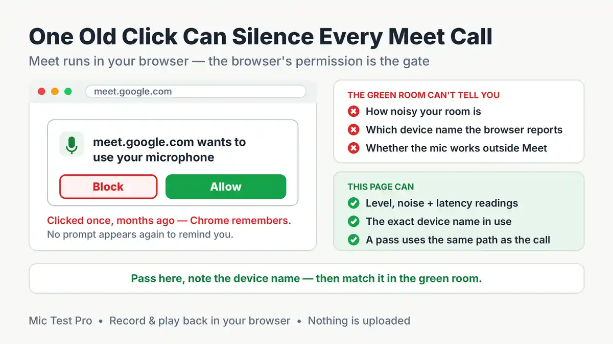
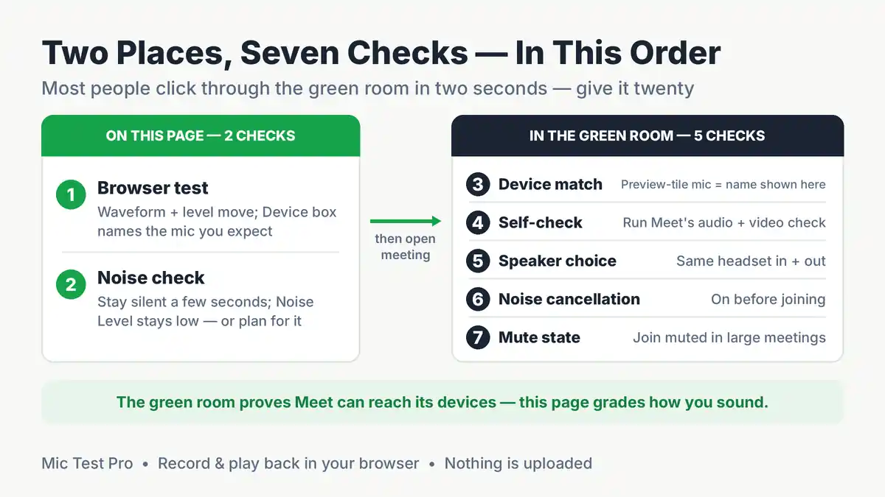
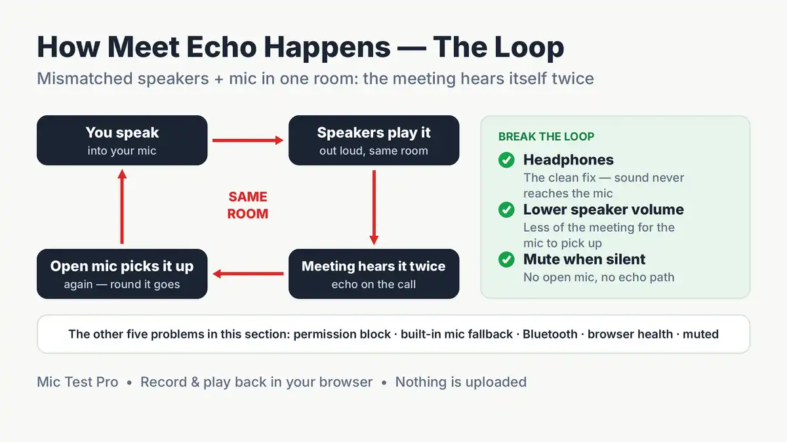
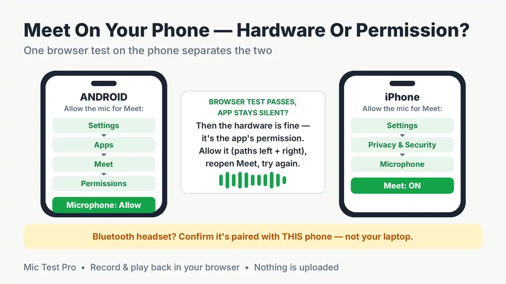

Why Test Your Mic Before A Google Meet Call?

Meet has a useful self-check on the screen before you join — Google calls it the green room — but it only shows you the devices Meet has already chosen. It does not tell you how noisy your room is, which device name your browser reports, or whether the microphone works outside Meet at all. When something is wrong, the green room can leave you guessing which layer failed: the headset, the browser, the system, or Meet itself.
This page answers the first question cleanly: does sound reach your browser, from the device you expect, at a sensible level? Because Meet runs in the same browser for most people, a pass here uses much of the same path the meeting will use. A fail here is equally useful — it means joining the meeting and changing Meet settings will not help until the device, permission or system input is fixed.
The permission layer deserves special attention with Meet. A single “Block” click in Chrome months ago can silence every Meet call today, and the prompt may not appear again to remind you. People often describe this as “my mic stopped working in Meet”, when in fact the browser is simply obeying an old instruction. Testing here, in the same browser, exposes that block immediately: the test cannot start until you allow access.
Use the two checks together. Pass this test, note the device name shown here, then open your meeting and confirm the green room is using the same device. That one comparison catches the most common Meet problem of all — the meeting listening to a quiet built-in microphone while your headset sits ready and ignored.
How To Check Your Mic Before Joining Google Meet
Click “Start Mic Test” above and allow microphone access when the browser asks. If you blocked this site earlier, open the site settings from the icon beside the address bar, set Microphone to Allow, and reload the page. The Device box should change from “Not Connected” to a real device name.
Speak at your normal meeting volume. The waveform should move as you talk and settle when you stop, and the input level should rise clearly. If it only moves when you lean in or speak loudly, your meeting audio will be quiet too — fix the distance or the device choice now, not in front of everyone.
Stop talking and watch the Noise Level for a few seconds. Then type, run the fan, or open the window — whatever will be true during the call. If the reading jumps while you are silent, expect Meet's other participants to hear that noise as well, and consider headphones, a quieter position, or Meet's noise cancellation.
Read the Device box and be honest about whether it names the microphone you meant to use. “Built-in” or “Default” entries often mean your headset is connected for sound only. Change the computer's input if needed — Windows: Settings > System > Sound > Input; Mac: System Settings > Sound > Input — and test again.
Open your meeting link but do not join yet. On the green room screen, check the mic shown at the bottom of your preview tile matches the device that passed here; change it with the dropdown arrow if it does not. Use the audio and video check on that screen as the final confirmation, then join.
The latency reading is shown in milliseconds (ms): the delay between speaking and your browser receiving the sound. Lower is better — a high reading, often from a Bluetooth headset, means your voice will lag behind your lips on the call.
Record A Short Clip Before You Join
Meet has no test call, and the green room check only confirms that Meet can reach your devices — it never plays your voice back to you. This page can: press Record Voice, speak at your normal meeting volume, then stop and listen to the playback. If you sound distant, quiet or full of room noise, fix the device or your position before you join, not after. Recordings run up to 60 seconds, you can download the clip as a WAV file, and the audio never leaves your browser.
Two more checks live on the same panel. Test Speakers plays a short test sound through your chosen output, so you can confirm you will hear the meeting before you open it. Hear Yourself plays your own voice back live while you speak — use headphones, or your mic will pick up your speakers and the meeting will hear an echo.
Google Meet Pre-Join Checklist: The Green Room, Done Properly

The green room is the screen Meet shows before you join, with your preview tile and your devices. Most people click through it in two seconds. Give it twenty, in this order, and you will catch almost every microphone problem before it becomes a meeting problem. The first two rows happen here; the rest happen on that screen.
| Check And Action | Where | Pass Result |
|---|---|---|
| 1. Browser test — start the test here, allow access and speak at meeting volume. | This page | The waveform and level move, and the Device box names the microphone you expect. |
| 2. Noise check — stay silent for a few seconds, then make your normal room sounds. | This page | The Noise Level stays low while you are silent, or you have a plan for the noise you found. |
| 3. Device match — compare the mic at the bottom of the preview tile with the name shown here. | Meet green room, before joining | Both names match. If not, use the dropdown arrow on the preview tile to change the device. |
| 4. Self-check — run the audio and video check at the bottom of the preview tile. | Meet green room | Meet confirms your audio and video devices respond. |
| 5. Speaker choice — pick the speaker or headphones you will actually listen through. | Meet green room device list | Your speaker and microphone are a sensible pair, ideally the same headset, to avoid echo. |
| 6. Noise cancellation — turn it on if your room needs it and the option is offered. | More options > Settings > Audio | The setting is on before you join, rather than being hunted for mid-meeting. |
| 7. Mute state — join muted if the meeting is large, and know where the mic button is. | Green room and meeting controls | No surprises: you can unmute deliberately when it is your turn to speak. |
One honest limitation: the green room check confirms that Meet can reach your devices, but it does not grade your sound. It will not warn you that your voice is competing with a fan, or that you sound distant because the laptop mic is doing the work. That judgement is what this page's level, noise and device-name readings are for.
Common Google Meet Microphone Problems

The Browser Permission Block
Meet runs in the browser, so the browser's permission is the gate everything else passes through. If Chrome has the microphone blocked for Meet, no setting inside the meeting will restore it. Google's advice is to allow access when prompted; if you refused before, change it in the site settings for the Meet page and reload. On managed work or school devices, an administrator may control this, and the honest fix is to ask them rather than to keep clicking.
Headset Connected, Built-In Mic Recording
Google's own troubleshooting guidance gives this a specific warning: headsets may use the built-in microphone. Your ears hear the meeting through the headset, which feels like proof the headset is fully in use, while Meet quietly records from the laptop. The giveaway is a distant, roomy sound. Compare the device name here with the one in Meet, and select the headset in both places.
Echo From Mismatched Devices
Google warns that mismatched microphone and external speaker devices can cause echo. If your voice comes out of loudspeakers in the same room as an open microphone, the meeting hears itself twice. Headphones are the clean fix. Lowering the speaker volume and muting when you are not speaking also help, and Meet can surface echo advice under More options > Troubleshooting & help when it detects the problem.
Bluetooth Headsets That Behave Badly
Google notes that some Bluetooth headsets work well for ordinary audio calls but poorly with Meet. Symptoms include the mic not appearing, poor quality, or the headset connecting for sound only. Keep the headset's firmware updated, make sure it is not still connected to your phone, and if a particular headset repeatedly misbehaves with Meet, a wired headset or the supplied USB receiver is the pragmatic answer for important calls.
Too Many Tabs, An Old Browser, A Tired Computer
Meet is a browser application, so browser health is call health. Google's troubleshooting page advises updating your browser, closing non-essential tabs and applications, and checking whether other software is interfering. If your microphone works here but the call itself breaks up, treat it as a performance or network problem rather than a microphone problem, and work through Meet's Troubleshooting & help suggestions.
Muted, Or Muted By Design
Hosts and meeting settings can leave you muted, and some people join muted by habit and then speak into a muted microphone. Check the mic control at the bottom of the meeting before changing any device settings. And remember the physical layer: a headset boom raised to its mute position or a cable switch set to mute will defeat every software setting on this page.
Google Meet Mic Problems: Problem, Cause, Fix
| Problem | Most Likely Cause | Fix | Check on this page |
|---|---|---|---|
| Meet says it cannot use your microphone | The browser blocked microphone access for the Meet site | In Chrome, open the site settings from the icon beside the address bar on the Meet page, set Microphone to Allow, and reload. If the setting is locked, your administrator controls it. | Input Level flat — browser permission blocked |
| This test hears you, Meet does not | Meet is set to a different microphone than the one you tested | In the green room, or with the arrow beside the mic icon during a call, open the microphone dropdown and select the device named on this page. | This page hears you — the fault is in Meet |
| People say you sound distant | Meet is using the built-in laptop microphone instead of your headset | Select the headset as the microphone in Meet's device list. Google specifically warns that headsets may fall back to the built-in mic. | Tap test: the laptop mic answers, not the headset |
| There is an echo of the meeting | Your speakers and microphone are mismatched devices in the same room | Use headphones, lower the speaker volume, and mute when not speaking. Meet's Troubleshooting & help also offers echo guidance when it detects it. | Noise Level jumps when others speak |
| Your voice is too quiet | Microphone too far away, low system input volume, or the wrong device | Move closer first. Then check the input volume in your system sound settings and confirm the device in Meet matches the one that passed here. | Input Level barely moves at normal distance |
| Background noise is taking over | A sensitive mic placed near the noise, in a reflective room | Measure it with the Noise Level reading while silent. Move the mic closer to you and away from the noise, then turn on noise cancellation under More options > Settings > Audio where available. | Noise Level high while you are silent |
| Your Bluetooth headset mic will not appear | The headset is connected to another device, out of date, or poorly suited to Meet | Disconnect it from other devices, reconnect, and update its firmware. If it repeatedly fails with Meet, use a wired connection or its USB receiver for calls that matter. | Device name missing from the input list |
| The call breaks up although the mic test passed | Network, browser load or computer performance rather than the microphone | Update the browser, close spare tabs and apps, and open More options > Troubleshooting & help in Meet for suggestions matched to the problem it detects. | Input Level and Latency normal here — not a mic problem |
The Green Room Self-Check: Useful, But Only Half The Story
Google designed the pre-join screen to catch device problems. At the bottom of your preview tile you can see and change your microphone, speaker and camera, and there is a check for your audio and video before you click Join now. Used deliberately, it is a good final gate: it proves Meet itself can reach the devices it has selected, on this computer, in this browser, right now.
Its weakness is that it trusts its own selection. If Meet has chosen the built-in microphone, the green room will happily confirm that the built-in microphone works — while the headset you intended to use sits idle. That is why the device-name comparison matters so much. This page tells you which device your browser reports and how that device performs; the green room tells you which device Meet plans to use. When those two answers agree, you can join with confidence.
During the meeting, Meet gives you a second chance to correct course. The arrow beside the microphone icon opens your audio devices, and Google's rule of thumb is reassuringly simple: if the mic bar in that panel moves when you speak, your microphone works. To test your speaker, click Speaker, then Test Speakers — if you hear a test sound, your speaker works. Meet also watches for trouble — a red dot on the More options button signals that Troubleshooting & help has suggestions for a network or device problem it has noticed.
Put together, a calm pre-meeting routine looks like this. Test here and note the device name and noise level. Open the meeting and match the device in the green room. Run Meet's own check. Join. Total time, well under a minute — considerably less than the five minutes a failed start costs a room full of people.
Testing Your Mic For Google Meet On Mobile

On a phone, most people meet through the Meet app or the Gmail app rather than a browser. This page still earns its place in your routine: open it in the phone's browser, allow microphone access, and speak. A clear waveform with the right device name tells you the phone's microphone — or your connected headset — is capable of being heard. It separates “the hardware cannot hear me” from “the app is not allowed to hear me”.
If the browser test passes and the app stays silent, the app permission is the next stop. On Android, open Settings > Apps > Meet > Permissions and allow the microphone. On an iPhone, open Settings > Privacy & Security > Microphone and switch Meet on. Then reopen the app and try again; an app that was refused permission may need the change before it listens properly.
Bluetooth deserves a check on mobile, because a headset can be paired with your laptop and phone at different times of the same day. Confirm the headset is connected to the phone you are holding, and be aware of the trade-off Google flags on desktop too: some Bluetooth headsets simply perform poorly in Meet. For a call that matters, the phone's own microphone at a sensible distance is often the more reliable choice.
Google Meet Mic Test FAQs
Why can't Google Meet find my microphone?
The common causes are a blocked browser permission, the wrong device selected in Meet, or the microphone not appearing in your computer's input settings at all. Run this test first: if it cannot hear you, allow microphone access in your browser and check the system input. If this test works but Meet does not, open the device list in Meet's green room or in-call audio settings and select the same device by name.
How do I test my microphone in Google Meet before joining?
On a computer, open the meeting in Google Meet and stay on the screen before you join. At the bottom of your preview tile you will see your mic, speaker and camera; use the dropdown arrow to change the device, and use the audio and video check at the bottom of the preview tile to confirm they respond. Google calls this screen the green room. Test here first, though: this page also shows your noise level and names the device your browser is using.
Do I need a Google account to use this mic test?
No. This test runs on its own in your browser. It does not need a Google account, a meeting link, or the Meet app. It checks the microphone itself, before Meet and its browser permissions become part of the picture.
Why does Google Meet use my built-in microphone instead of my headset?
Google itself warns that headsets may end up using the computer's built-in microphone. Meet treats the speaker and microphone as separate choices, so your headset can be playing the sound while the laptop mic does the recording. In the green room, or during a call from the arrow next to the microphone icon, open the microphone dropdown and select the headset by name. Confirm on this page that the Device box shows the same name.
How do I change my microphone during a Google Meet call?
Click the small arrow next to the microphone icon at the bottom of the meeting. A panel shows your audio devices; open the microphone dropdown and choose the right device. Google's own guidance is that if the mic level bar in that panel moves when you speak, your microphone is working. If your device is missing, reconnect it and check it appears in your computer's sound input settings.
How do I allow microphone access for Google Meet in Chrome?
When Chrome asks, choose Allow while visiting the site. If you refused earlier, click the icon at the left of the address bar while on the Meet page, open the site settings, and set Microphone to Allow, then reload. On a work or school computer your administrator may control this setting, in which case you may not be able to change it yourself.
Why do people hear an echo in my Google Meet call?
Google warns that using mismatched microphone and external speaker devices can cause an echo, because your speakers play the meeting back into a microphone that is listening in the same room. Use headphones where you can, lower the speaker volume, and mute yourself when you are not speaking. Meet also shows echo guidance under More options > Troubleshooting & help when it detects the problem.
Why is my microphone too quiet in Google Meet?
Check the simple things in this order: microphone distance, whether Meet is really using the mic in front of you, and your system input volume. A built-in laptop mic across the desk is the most common reason for a quiet, distant voice. Move closer, select the correct device in Meet, and on Windows check Settings > System > Sound > Input or on a Mac System Settings > Sound > Input. Speak at your normal volume when you re-test here; shouting into the test gives a false pass.
Does Google Meet have noise cancellation?
Yes, Meet offers noise cancellation, although availability depends on your account, device and meeting setup. Where it is available, you turn it on from More options > Settings > Audio, either before joining or during the meeting. It cancels non-speech noises only — typing, a door closing, room echo, construction sound. Voices from a TV or people talking will not be canceled, and turn it off if you need music in the meeting. Use the Noise Level reading on this page first: if your room is quiet when you are silent, you may not need it, and if it is not, moving the microphone closer to you and farther from the noise still helps more than any single setting.
Can I test my microphone for Google Meet on my phone?
Yes. Open this page in your phone browser, allow microphone access and speak: the waveform, level and device response tell you whether the phone or a connected headset is being heard. If this test passes but the Meet app cannot hear you, check the phone's app permissions and allow the microphone for Meet. Remember that a Bluetooth headset may be connected to another device, so confirm it is paired with the phone you are testing.
Does this mic test record or upload my voice?
Only if you press Record Voice. The test analyses your microphone inside your browser and shows the results on this page. If you choose to record, the recording stays in your own browser for playback or download — nothing is uploaded or stored on any server.
Does Google Meet have a test call?
No. Google Meet has no test call feature like the one in Microsoft Teams. Instead, use the pre-join screen Google calls the green room: stay on the screen before you join, check the microphone, speaker and camera shown at the bottom of your preview tile, and run the audio and video check there. Test on this page first, so you know your microphone itself works before you check Meet's device choices.
Can I test my speakers with this tool too?
Yes. Press Test Speakers and the tool plays a short test sound through your chosen output. If you hear it clearly, the listening side works before you even open the meeting; if you hear nothing, check the output device in your system sound settings. Meet's green room has its own speaker test as well — this one simply catches the problem a step earlier.